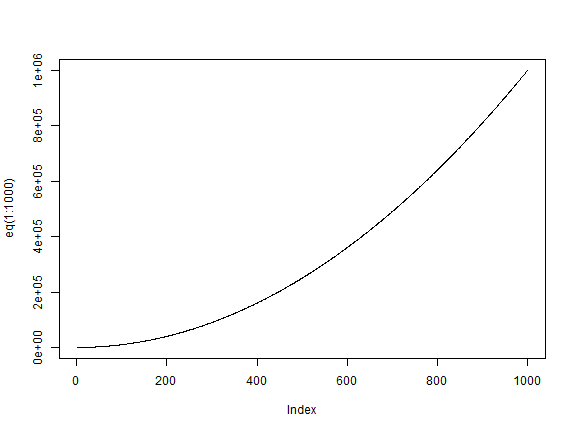
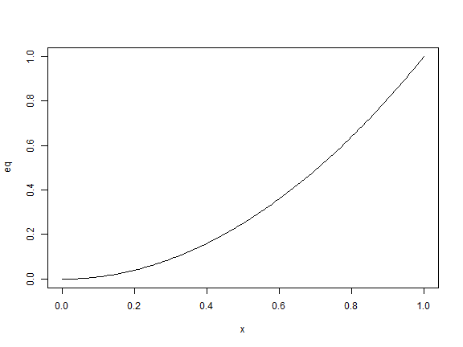
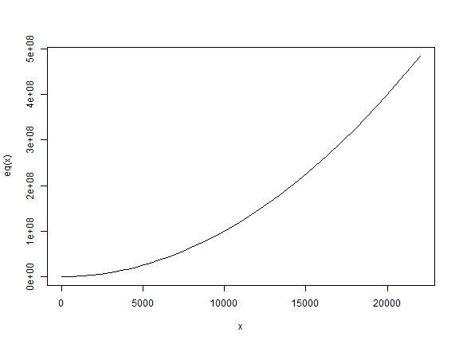
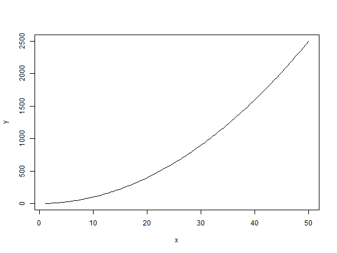
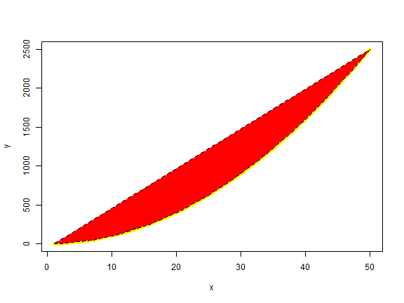
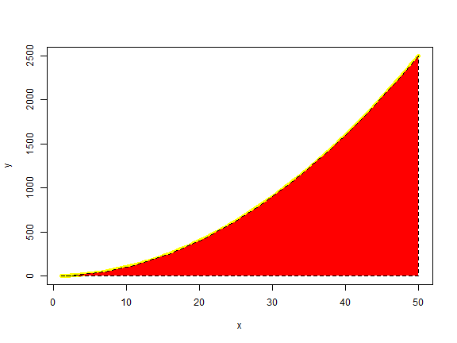

加入文字
繪圖區中的文字
函數 text() 在繪圖區根據座標填入字串,簡化的指令如下:
text(x, y, labels)
- x and y: 文字座標;
- labels: 例如 "a label"
- pos: 下左上右，1234
- cex: 放大倍數，例如，0.65。
範例 :
d<-head(mtcars)
plot(d[,'wt'], d[,'mpg'],
main="Milage vs. Car Weight\n~~~~~~~~~~~~~~~~~~~",
xlab="Weight", ylab="Miles/(US) gallon",
pch=19, col="darkgreen")
text(d[,'wt'], d[,'mpg'], row.names(d), cex=1,pos=3,col="red") #🏷
在margin中填入文字
mtext(text, side=3)
- text : 例如"a label"
- side : 哪一側 :
- 順時針
- 1: 下
- 2: 左
- 3: 上
- 4: 右
範例 :
plot(1:10, 1:10,
main="mtext(...) examples\n~~~~~~~~~~~")
mtext("Magic function", side=3)

Add mathematical annotation to a plot
plot(1:10, 1:10,
main="text(...) examples\n~~~~~~~~~~~")
text(4, 9, expression(hat(beta) == (X^t * X)^{-1} * X^t * y))
text(7, 4, expression(bar(x) == sum(frac(x[i], n), i==1, n)))
函數畫圖
比較函數plot()、curve()
-
plot()x<-seq(1,10,0.1) y<-exp(x) x<-y eq = function(x){x*x} plot(x,eq(x), type='l') plot(eq) #🏷
-
curve()-
plot()的參數可以是只有一個參數座標y 或兩個參數,如二為座標(x,y),或是函數名稱。🏷 -
💡函數
curve()的第一個參數是expr,不是y座標。 -
㊙️ 如果不指定
from,to,或者xlim,內定是從0到1。eq = function(x){x*x} curve(eq, from=1, to=50, xlab="x", ylab="y") # `eq` 是一個函數名稱 curve(eq, xlim=c(1,50),n=100, xlab="x", ylab="y") #🏷
-
-
❓ 解釋為甚麼下面錯誤?如何修正?
eq = function(x){x*x} y<-eq(1:50) curve(y, xlab="x", ylab="y") #> Error in y(x): 沒有這個函式 "y" -
❓ 解釋為甚麼下面錯誤?如何修正?
eq = function(x){x*x} z<-1:50 curve(eq(z), xlab="x", ylab="y")
- 第一個參數必須是
expr - 一樣的錯誤型態,因為
eq(z)已經變成Y座標。
解1:利用xname="z"
eq = function(x){x*x}
z<-1:50
✔️curve(eq(x), xlim =c(1,50)) #<!--html_preserve--><span data-bs-toggle="tooltip" data-bs-html="true" data-bs-placement="bottom" title="👏這樣也可以">🏷</span><!--/html_preserve-->
✔️❌curve(eq(z),xname="z", xlab="x", ylab="y") # <!--html_preserve--><span data-bs-toggle="tooltip" data-bs-html="true" data-bs-placement="bottom" title="👏雖然沒有出錯，但是這樣只畫出了0到1的值">🏷</span><!--/html_preserve-->
❌curve(eq(x), xlim =c(1:50)) #<!--html_preserve--><span data-bs-toggle="tooltip" data-bs-html="true" data-bs-placement="bottom" title="👏因為xlim是(from,to)只有兩個值的向量 ，這裡用了1:50,共50個">🏷</span><!--/html_preserve-->
plot example
正常
polyred = curve(dnorm(x), xlim = c(-4,4)) #🏷
polyred #
polygon(polyred$x, polyred$y, col = "red") # 🏷
練習:參照上例,函數是 \(f(x)=x^2\) 要在函數和X軸之間著色 ❓ 解釋下面兩個,第一個是錯的
-
❌ 這不是我們要的圖
eq = function(x){x*x} y<-eq(1:50) curve(eq, 1,50,xlab="x", ylab="y",lwd=5,col="yellow") polygon(1:50,y,lty=2,col="red")
-
⭕ 修正
eq = function(x){x*x} y<-eq(1:50) curve(eq, 1,50,xlab="x", ylab="y",lwd=5,col="yellow") polygon(c(1:50,50),c(y,0),lty=2,col="red") #🏷 💯 第一個點和最後一個點會連在一起。然後填色。
rug
set.seed(3)
x <- rbeta(150, 3, 25)
#png("rug.png")
hist(x)
rug(quantile(x)[2:4], col=2, lwd=2.5) # 預設是 "0%" "25%" "50%" "75%" "100%"

set.seed(3)
x <- rbeta(150, 3, 25)
#png("rug.png")
hist(x)
abline(v= quantile(x)[2:4],lty="dotted",col="red" )
xpos= quantile(x)[2:4]
text(xpos[1],0, "25%")
text(xpos[2],0, "50%")
text(xpos[3],0, "75%")
練習
劃出常態分配
- -4到4的密度,機率
- qnorm,rnorm
figure
par(mfrow=c(2,2))
plot(dnorm,xlim=c(-4,4),n=100,type="l")
plot(pnorm,xlim=c(-4,4),n=100,type="l")
plot(qnorm,xlim=c(0,1),n=100,type="l")
plot(rnorm,xlim=c(-4,4),n=100,type="p")
其他
- plot.new() set up plot region
- plot.window() set up coordinate system (xlim, ylim)
- box() Draw rectangle around plot
- axis Draw axes, lines(), points(), text, ...
圖形存檔
可以利用menu存檔，例如File -> Save As. 也可以利用函數：
| Function | Output to |
|---|---|
| pdf("mygraph.pdf") | pdf file |
| win.metafile("mygraph.wmf") | windows metafile |
| png("mygraph.png") | png file |
| jpeg("mygraph.jpg") | jpeg file |
| bmp("mygraph.bmp") | bmp file |
| postscript("mygraph.ps") | postscript file |
# Give the chart file a name.
png(file = "scatterplot_matrices.png")
# Plot the matrices between 4 variables giving 12 plots.
# One variable with 3 others and total 4 variables.
pairs(~wt+mpg+disp+cyl,data = mtcars,
main = "Scatterplot Matrix")
# Save the file.
dev.off()